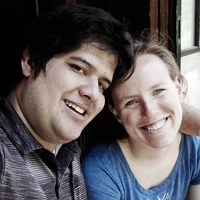

Project Access

Live Campaigns and Projects
- Serpents Skull Adventure Path : The latest campaign I am running, started in October 2024.
- Cookbook Project: Developing placeholder for family cookbook.
Archived Campaigns:
- Echoes of Glory: My first Homebrew game and attempt to GM, ran roughly one book's worth, running from August 2015 - February 2016.
- Council of Thieves (1): My first full campaign (does not have a site), running from August 2017 - March 2018, completing the whole campaign.
- Wrath of the Righteous: My first campaign with a site, running from May 2018 - January 2019, completing the first three books.
- War for the Crown: My second major campaign, running from March 2019 - June 2020, completing the whole campaign.
- Tyrant's Grasp: My third major campaign, running from January 2020 - March 2021, completing 1 1/2 books and aborting for the pandemic.
- Council of Thieves: My fourth major campaign, running from July 2020 - June 2021, completing the whole campaign.
- Ruins of Azlant: My fifth major campaign, running from August 2021 - June 2023, completing the whole campaign
- Tyrant's Grasp: My sixth major campaign, running from July 2023 - February 2024, completing 2 books and aborting to PCS.